학생용 앱 안내
출결·학습·도시락·인터넷 신청까지, 학원 생활을 앱 하나로
한눈에 보는 오늘 하루
앱을 켜면 가장 먼저 보이는 화면입니다. 오늘의 출입 상태, 학습 시간, 상·벌점, 일정, 공지를 한 번에 확인할 수 있어요.
- 1맨 위에 우리 지점 이름과 알림 버튼이 있어요. 빨간 숫자는 읽지 않은 알림 개수입니다.
- 2출입 현황 카드 — 입실하면 "공부중", 퇴실하면 "휴식중"으로 바뀌고 지금 몇 시간째 공부 중인지 보여줘요.
- 3리포트 카드에서 이번 달 학습 시간·벌점·상점을 요약해서 봅니다. 탭하면 상세 화면으로 이동해요.
- 4맨 아래 탭 바로 홈·요청사항·일정·더보기를 이동합니다.
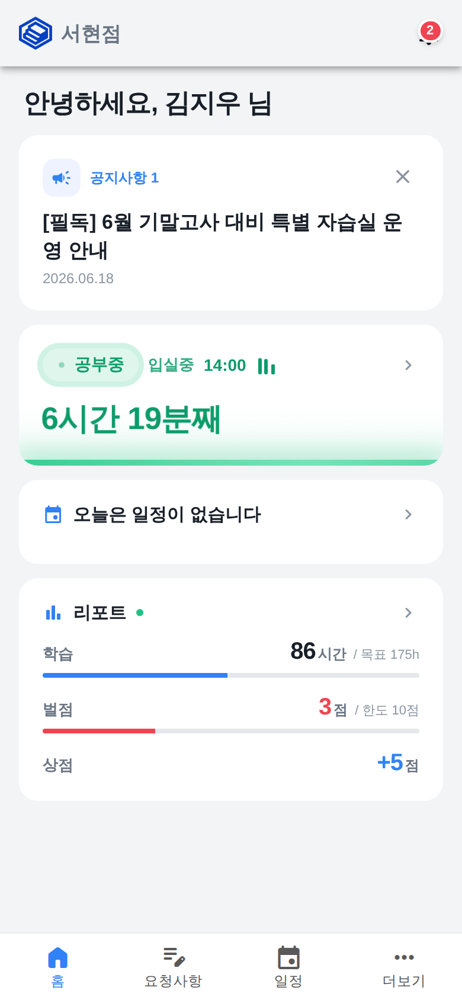
오늘 출입을 한눈에
달력에서 날짜를 고르면 그날 학원에 들어오고 나간 기록이 교시 시간표 위에 그려집니다. 입실은 오른쪽, 퇴실은 왼쪽 사진으로 표시돼요.
- 1위쪽 달력에서 보고 싶은 날짜를 누르세요. 기본은 오늘 날짜예요.
- 2가운데 세로 막대가 1교시부터 7교시까지의 시간표예요. 초록색은 학습 중, 주황색은 미출석, 파란색은 미리 알린 일정 시간입니다.
- 3막대 양옆의 작은 사진을 누르면 입실·퇴실 시각과 출입 사진을 크게 볼 수 있어요.
- 4출입 사진은 10일 동안만 보관되고, 그 이후에는 사진 없이 시각만 남습니다.
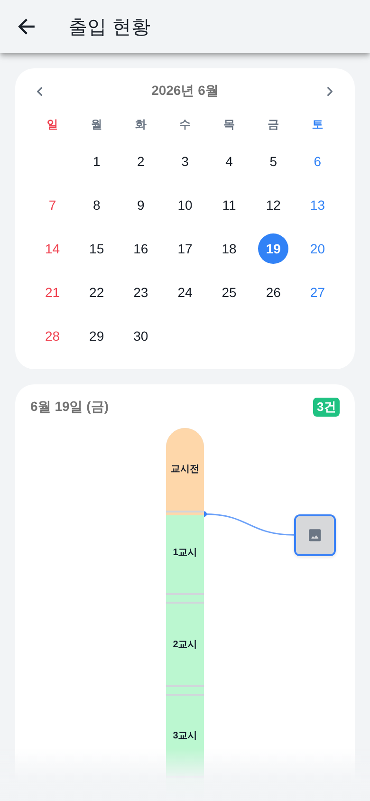
결석·외출·지각을 미리 알려요
달력에서 날짜를 누르고 오른쪽 아래 + 버튼을 누르면 지각·조퇴·외출·전체 미출석 일정을 등록할 수 있어요. 미리 알리면 그 시간은 미출석으로 잡히지 않습니다.
- 1달력에서 일정을 등록할 날짜를 누르세요. 여러 날짜를 눌러 한 번에 같은 내용으로 등록할 수도 있어요.
- 2날짜를 누르면 달력이 접히고 아래에 그 날의 일정 목록이 보입니다.
- 3오른쪽 아래 파란색 + 버튼을 눌러 새 일정을 등록하세요. 상황 유형(지각·조퇴·외출·전체 미출석)을 고르고 시간과 사유만 적으면 됩니다.
- 4이미 등록한 일정 카드를 누르면 내용을 고치거나 삭제할 수 있어요.
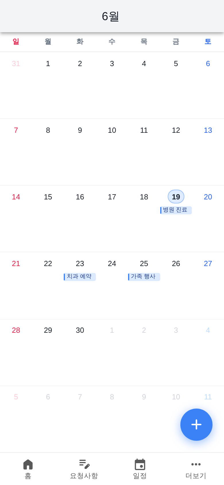
내 출결 사유 모아보기
결석·지각·조퇴·외출로 등록된 사유와, 그래서 몇 교시부터 출석으로 인정되는지 카드로 보여줍니다.
- 1등록된 사유들이 최근에 만든 순서로 나열됩니다.
- 2왼쪽 색 칸은 사유 종류(결석·지각·조퇴·외출)예요.
- 3오른쪽 글씨로 사유 내용과 '몇 교시부터 출석'인지 시작 시각을 보여줘요.
- 4카드를 누르면 날짜·출결 가능 시각·등록 경로가 담긴 상세 화면이 열립니다.
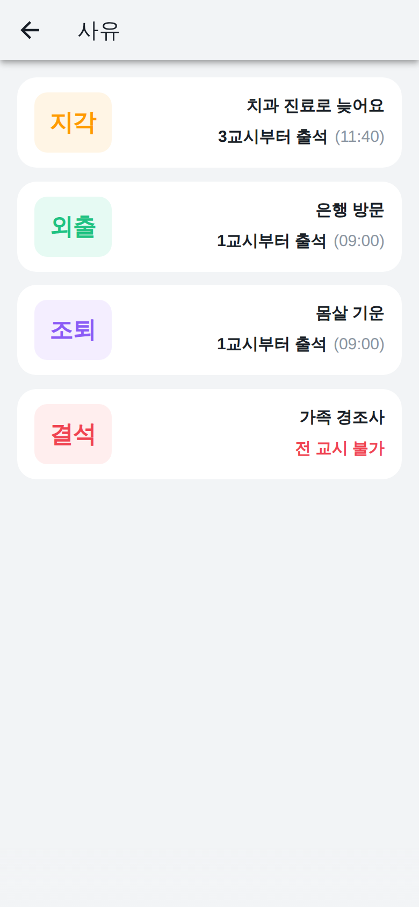
도시락 신청하고 결제하기
식단표를 확인하고 원하는 날짜의 점심·저녁 도시락을 골라 한 번에 결제할 수 있어요. 도시락은 한 개 8,000원이고, 주말은 운영하지 않아요.
- 1식단표 사진을 눌러 무슨 메뉴인지 확인해요. (사진을 두 손가락으로 벌리면 크게 볼 수 있어요)
- 2원하는 날짜에서 점심 또는 저녁 칸을 눌러 선택하면 파란색으로 바뀌어요.
- 3아래쪽에 선택한 개수와 합계 금액이 보이면 '결제하기'를 눌러요.
- 4결제 링크를 받을 사람(본인 또는 부모님)을 고르면 알림톡으로 결제 링크가 가요.
- 5결제를 마치면 칸이 '결제완료'로 바뀌어요. 신청 날짜 전날까지는 '취소'를 눌러 취소할 수 있어요.
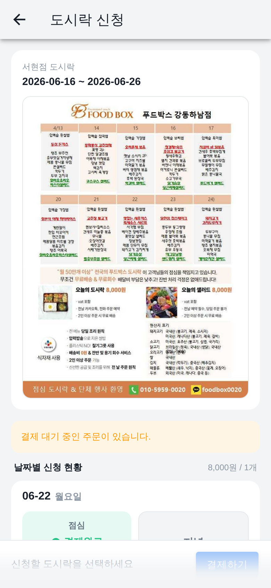
인터넷 사용 신청과 연결 상태 확인
학원 와이파이에서 차단된 사이트까지 써야 할 때 인터넷 사용을 신청해요. 신청하면 그날 운영 마감(새벽 1시 30분)까지 차단된 사이트를 뺀 모든 사이트를 쓸 수 있어요. 이 화면에서는 신청 내역과 연결 상태를 확인합니다.
- 1오른쪽 아래 파란색 '신청' 버튼을 눌러 새 인터넷 사용을 신청해요.
- 2신청한 내역이 카드로 쌓이고, 사유와 신청 시각이 함께 보여요.
- 3상태 배지로 진행 상황을 확인해요 — '진행중'은 처리 중, '전체 연결 완료'는 인터넷이 열린 상태, '연결 종료'는 시간이 끝났거나 취소된 상태예요.
- 4'진행중'은 잠시 기다리면 자동으로 '전체 연결 완료'로 바뀌어요(화면이 자동으로 갱신돼요).
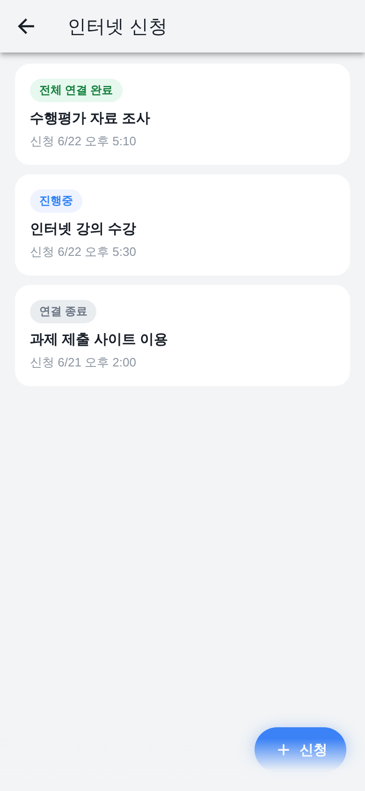
사유만 적으면 신청 끝
예전처럼 사이트 주소나 사용 시간을 고를 필요 없이, 신청 사유만 적으면 됩니다. 신청하면 지금부터 그날 운영 마감(새벽 1시 30분)까지 차단된 사이트를 제외한 모든 사이트에 접속할 수 있어요.
- 1안내 문구에서 언제까지 인터넷을 쓸 수 있는지(그날 새벽 1시 30분까지) 확인해요.
- 2'인터넷 신청 사유'에 사용할 이유를 적어요. (예: 수행평가 자료 조사)
- 3아래 '신청' 버튼을 누르면 신청이 접수되고 신청 내역 화면으로 돌아가요.
- 4부적절한 사유나 유해 사이트 접속이 확인되면 바로 차단될 수 있어요.
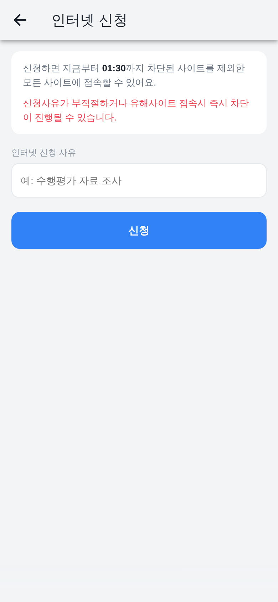
학원 공지 한눈에 보기
다니는 지점에서 올린 공지사항을 최신순으로 모아서 보여드려요. 중요한 공지는 맨 위에 고정돼요.
- 1더보기 화면에서 공지사항을 누르면 우리 지점 공지 목록이 열려요.
- 2압정 표시가 붙은 공지는 꼭 확인해야 하는 고정 공지예요.
- 3제목 옆 클립 표시는 첨부파일이 있다는 뜻이에요.
- 4공지를 누르면 전체 내용과 첨부파일을 볼 수 있어요.
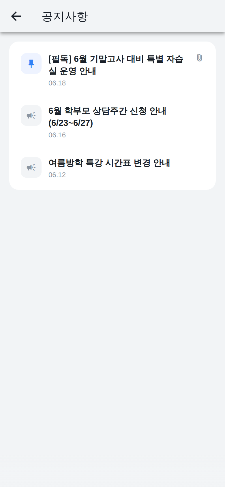
공지 자세히 보기
공지의 전체 내용과 첨부파일을 확인할 수 있어요. 글을 열면 자동으로 읽음 처리가 돼요.
- 1목록에서 공지를 누르면 제목, 작성자, 작성일과 본문이 보여요.
- 2본문에 들어간 사진이나 링크도 그대로 볼 수 있어요.
- 3첨부파일이 있으면 맨 아래에서 눌러 내려받을 수 있어요.
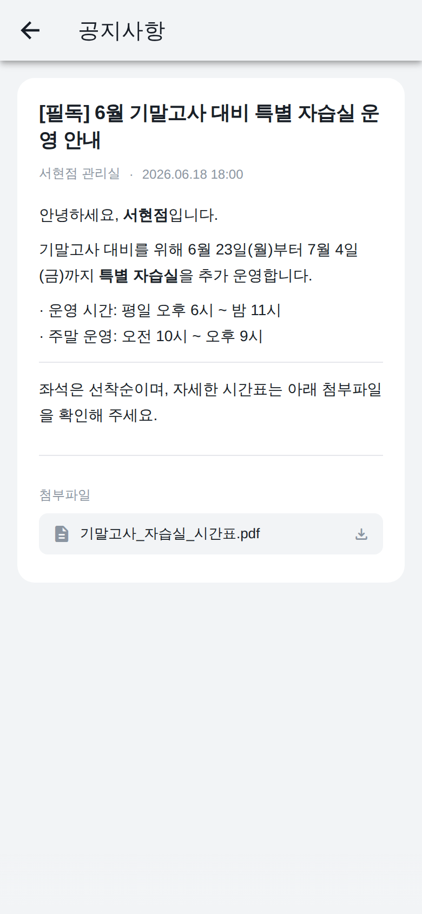
내 학습 리포트 한눈에 보기
이번 주·이번 달 공부한 시간, 출결, 상벌점을 그래프와 또래 비교로 보여줍니다. 화면 위 기간 버튼(주간·월간·일간)으로 바꿔 볼 수 있어요.
- 1홈 화면의 리포트 카드를 누르면 상세 리포트가 열립니다.
- 2맨 위 '주간 / 월간 / 일간' 버튼으로 보고 싶은 기간을 고르세요.
- 3핵심 지표에서 내 학습시간·출석률을 같은 학년 평균·최고와 막대로 비교합니다.
- 4아래로 내리면 시간대별·일별·요일별 공부 그래프와 출결, 상벌점 내역을 볼 수 있어요.
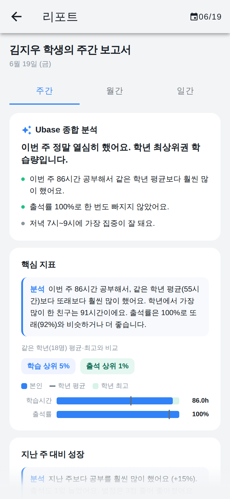
오늘 할 일 계획하고 체크하기
공부 계획(할일)을 등록하고 끝낸 일에 체크하면 달성률이 원형 그래프로 채워집니다. 위쪽 탭으로 '타이머'를 열면 과목별 공부 시간도 잴 수 있어요.
- 1더보기에서 '플래너 / 타이머'를 누르세요.
- 2오른쪽 아래 + 버튼으로 할일 제목·날짜·시간을 입력해 추가합니다.
- 3끝낸 할일을 누르면 완료 도장이 찍히고 가운데 달성률이 올라갑니다.
- 4위쪽 '타이머' 탭에서는 과목을 고르고 재생 버튼을 눌러 공부 시간을 잴 수 있어요.
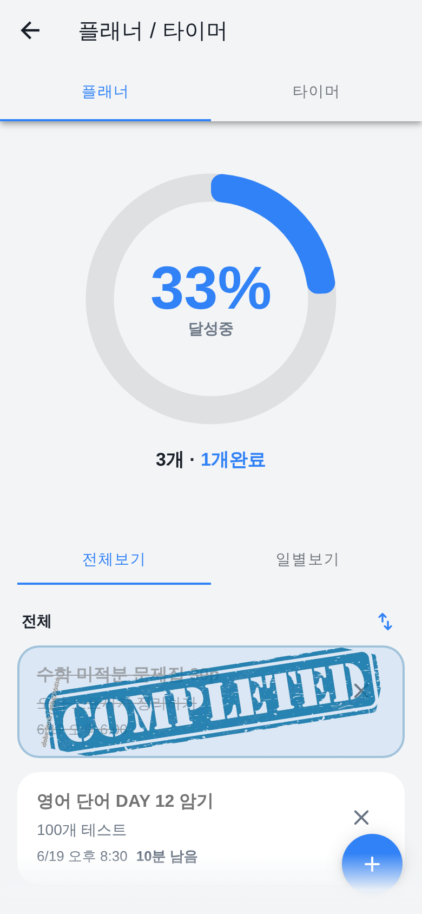
학원에 요청 남기기
결석·조퇴 같은 일정이나 학원에 전하고 싶은 내용을 글로 남기면, 학원에서 확인 후 처리해 드려요.
- 1오른쪽 아래 파란 + 버튼을 누르면 요청 작성 창이 열려요.
- 2내용을 100자 이내로 적고 요청 보내기를 누르면 접수돼요.
- 3보낸 요청은 목록에 쌓이고, 처리되면 '완료'로 바뀌어요.
- 4요청을 누르면 자세한 내용과 처리 상태를 볼 수 있어요.
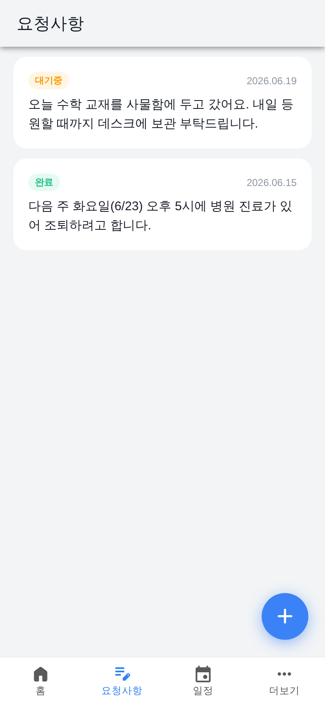
받은 알림 모아보기
출입 기록, 학원 공지, 일정 변경, 확인 요청 같은 소식을 한곳에서 모아 보여드려요. 안 읽은 알림에는 파란 점이 붙어요.
- 1안 읽은 알림은 진하게 표시되고 오른쪽에 파란 점이 보여요.
- 2알림을 누르면 읽음 처리되고, 관련 화면이 있으면 바로 이동해요.
- 3오른쪽 위 모두 읽음을 누르면 한 번에 모두 읽음으로 바꿀 수 있어요.
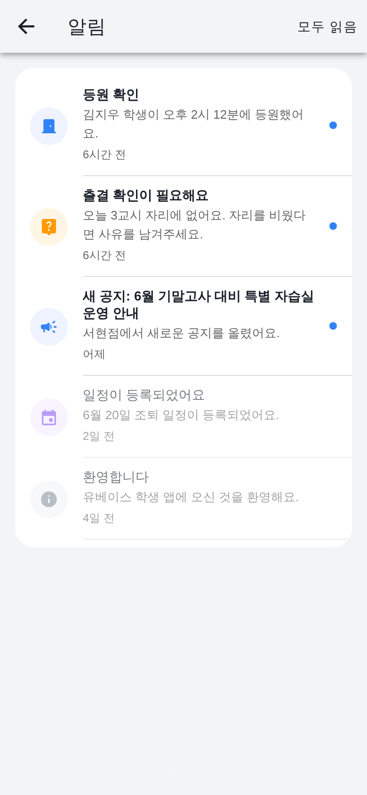
내 프로필 보기·수정
이름, 연락처, 학교, 목표 같은 내 정보를 확인하고 일부 항목은 직접 고칠 수 있어요.
- 1이름·연락처·성별·생년은 학원에 등록된 정보라 화면에서 바꿀 수 없어요.
- 2오른쪽 위 연필 버튼을 누르면 학교, 목표학교, 이메일, 집주소를 고칠 수 있어요.
- 3수정한 뒤 체크 버튼을 누르면 저장돼요.
- 4맨 아래에서 로그아웃하거나 계정 탈퇴를 할 수 있어요.
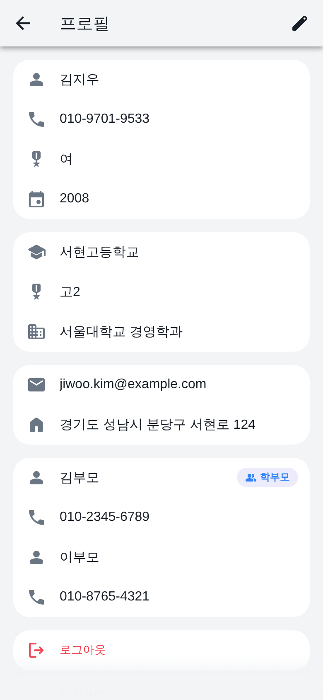